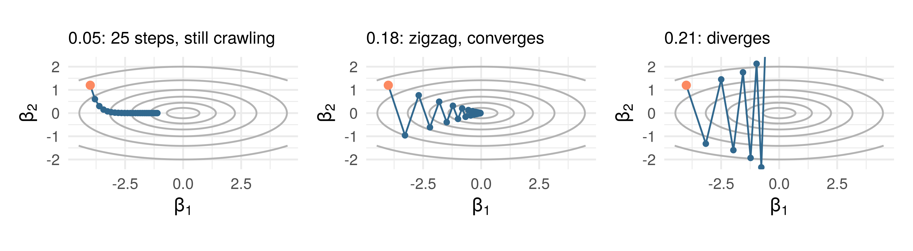
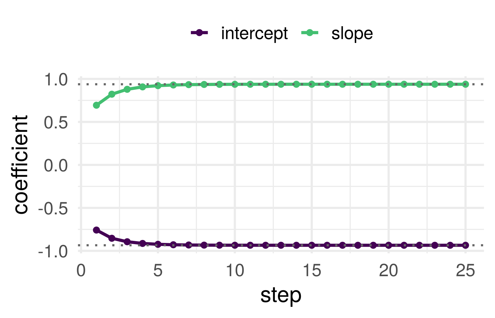
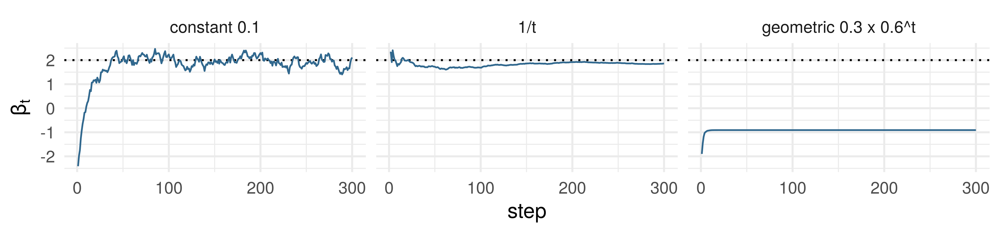
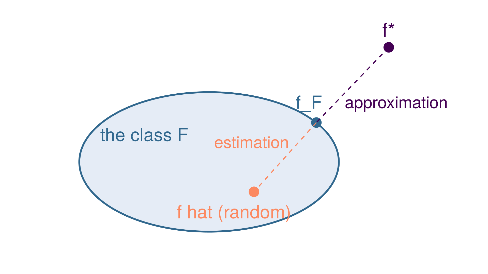
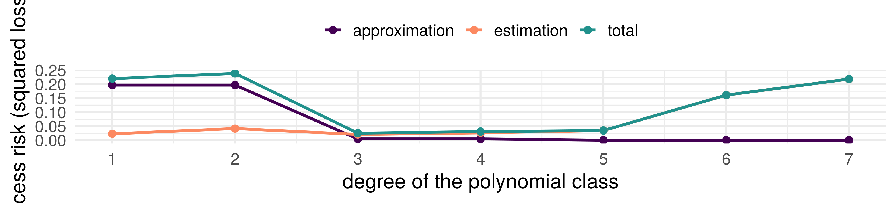

Machine learning
Week 4: optimization and model fitting
Joshua Loftus
LSE
Week 4: optimization and model fitting
Part 1: fitting logistic regression
Part 2: empirical risk minimization and gradient descent
Part 3: stochastic gradient descent
Part 4: where the error comes from, this time
Part 5: stopping
Where week 3 left the fitting
Week 2, least squares: \(\hat\beta\) solves the normal equations \(\mathbf X^\top(\mathbf y - \mathbf X\hat\beta) = \mathbf 0\), and there is a formula, \(\hat\beta = (\mathbf X^\top\mathbf X)^{-1}\mathbf X^\top\mathbf y\).
Week 3: logistic regression is fitted by maximum likelihood. How glm does it: this week
Write down the normal equations from memory. Then guess: what plays their role for logistic regression, where the fitted values are probabilities \(\hat p_i\) instead of \(\mathbf x_i^\top\hat\beta\)?
Fitting logistic regression
How do we estimate \(\beta\)? Maximum likelihood:
\[ \text{maximize } L(\beta ; \mathbf y | \mathbf X) = \prod_{i=1}^n L(\beta ; y_i | \mathbf x_i) \] (assuming the data is i.i.d.)
Next slide: a bit of mathematics
MLE
\[ L(\beta ; \mathbf y | \mathbf x) = \prod_{i=1}^n \left( \frac{1}{1+e^{-x_i \beta}} \right)^{y_i} \left(1- \frac{1}{1+e^{-x_i \beta}} \right)^{1-y_i} \]
\[ \ell(\beta ; \mathbf y | \mathbf x) = \sum_{i=1}^n y_i \log \left( \frac{1}{1+e^{-x_i \beta}} \right) + (1-y_i) \log \left(1- \frac{1}{1+e^{- x_i \beta}} \right) \]
MLE: the derivative
\[ \frac{\partial}{\partial \beta} \ell(\beta ; \mathbf y | \mathbf x) = \sum_{i=1}^n y_i \left( \frac{x_i e^{-x_i \beta}}{1+e^{-x_i \beta}} \right) + (1-y_i) \left(\frac{-x_i}{1+e^{- x_i \beta}} \right) \]
\[= \sum_{i=1}^n x_i \left[ y_i - \left(\frac{1}{1+e^{- x_i \beta}} \right) \right] = \color{#b73779}{\sum_{i=1}^n x_i [y_i - \hat p_i(\beta)]}\]
Set this equal to 0 and solve for \(\beta\). How: the rest of today
The score equations, read as orthogonality
Week 2, least squares: \(\mathbf X^\top(\mathbf y - \mathbf X\hat\beta) = \mathbf 0\). The residual is orthogonal to every column of \(\mathbf X\).
Logistic score equations. Stack the last slide’s rows: writing \(\mathbf p(\beta) = (\hat p_1(\beta), \ldots, \hat p_n(\beta))^\top\), the MLE \(\hat\beta\) solves \[ \mathbf X^\top\big(\mathbf y - \mathbf p(\hat\beta)\big) = \mathbf 0 \]
Same shape as least squares, with \(\mathbf X\hat\beta\) replaced by the fitted probabilities: the residual \(\mathbf y - \hat{\mathbf p}\) is orthogonal to every column of \(\mathbf X\)
No closed form, because \(\mathbf p(\beta)\) is not linear in \(\beta\)
Two things the score equations say
Row one is the intercept. \(\sum_i (y_i - \hat p_i) = 0\): the fitted probabilities average to the observed proportion of 1s on the training rows. An average identity for an unpenalized fit with an intercept, not calibration at each \(x\), and not a statement about new data.
The log-likelihood is concave. Differentiating once more, \[ \frac{\partial^2 \ell}{\partial\beta\,\partial\beta^\top} = -\sum_{i=1}^n \hat p_i(\beta)\,\big(1 - \hat p_i(\beta)\big)\, x_i x_i^\top \preceq 0, \] so any finite solution of the score equations is a global maximum, and the only one when \(\mathbf X\) has full column rank.
What concavity does not give: existence. Week 3’s separable case is the case with no finite solution.
Newton-Raphson
- Find the roots of a function
- Iteratively approximating the function by its tangent
- Root of the tangent line is used as starting point for next approximation
- See the animation on Wikipedia
Exercise: using result from previous slide, compute the second derivative of \(\ell\) and derive the expressions needed to apply Newton-Raphson
Logistic regression fitting: multivariate case
Newton-IRLS (equivalent) steps:
\[ \begin{eqnarray} \hat{\mathbf p}_t & = & g^{-1}(\mathbf X \hat \beta_t) & \ \text{ update probs.} \\ \mathbf W_t & = & \text{diag}[\hat{\mathbf p}_t (1 - \hat{\mathbf p}_t)] & \ \text{ update weights} \\ \hat{\mathbf{y}}_t & = & g(\hat{\mathbf p}_t) + \mathbf W_t^{-1}(\mathbf y - \hat{\mathbf p}_t) & \ \text{ update response} \end{eqnarray} \]
and then update parameter estimate (LS sub-problem) \[\hat{\beta}_{t+1} = \arg \min_{\beta} (\hat{\mathbf{y}}_t - \mathbf X \beta)^T \mathbf W_t (\hat{\mathbf{y}}_t - \mathbf X \beta)\]
Note: larger weights on observations with \(\hat p\) closer to 1/2, i.e. the most difficult to classify (look for variations of this theme) See Section 4.4.1 of ESL
Part 2: empirical risk minimization and gradient descent
ML tasks as optimization problems
For a given loss function \(\ell(y, f(x))\) and probability model \((X,Y) \sim P\), we want to find a function \(f\) to minimize risk:
\[ \text{minimize } R(f) = \mathbb E_P[\ell(Y, f(X))] \]
Math model \(\leftrightarrow\) Statistical model
Assume an i.i.d. sample from \(P\), focus on empirical risk minimization (ERM)
\[ \text{minimize } \hat R_n(f) = \frac{1}{n} \sum_{i=1}^n \ell(y_i, f(x_i)) \]
We also choose a function class \(\mathcal F\) (or parameter set), i.e. type of function \(f\), determining the domain of the optimization
Example: linear regression
Linear regression. Probability model: random errors \(\varepsilon \sim N(0, \sigma^2)\). Loss: squared, \(\ell(y, f(\mathbf x)) = (y - f(\mathbf x))^2\). Function class: \(\mathcal F = \{ f_\beta(\mathbf x) = \mathbf x^T \beta : \beta \in \mathbb R^{p+1} \}\). Algorithm: OLS, closed-form solution (memorized yet?)
\[\underset{\beta \in \mathbb R^{p+1}}{\text{minimize }} \frac{1}{n} \sum_{i=1}^n (y_i - \mathbf x_i^T \beta)^2\]
More examples: GLM
GLM. Probability model: family = binomial(), poisson(), etc. Loss: minus the log-likelihood of one row, so that \(\hat R_n(\beta) = -\ell(\beta)/n\). Function class: \(\{ g^{-1}(\mathbf x^T \beta) : \beta \in \mathbb R^{p+1} \}\), with a fixed link function \(g\). Algorithm: ERM (also MLE in this case) via iterative methods like Newton-Raphson or gradient descent
\[ \underset{\beta \in \mathbb R^{p+1}}{\text{minimize }} -\frac{1}{n} \sum_{i=1}^n \log L(\beta ; y_i | \mathbf x_i) \]
Optimization algorithms
Downside of Newton-Raphson: requires second derivatives, including inverting the \(p \times p\) Hessian matrix when optimizing over \(p > 1\) parameters
If \(p\) is large, second-order optimization methods like Newton’s are very costly
First order methods only require computing the \(p \times 1\) gradient vector
Recall that the gradient is a vector in the direction of steepest increase in the parameter space
Gradient (steepest) descent
i.e. skiing as fast as possible. Notation: the objective is the empirical risk \(\hat R_n(\beta)\), and \(t\) counts steps
Start at an initial point \(\beta_0\)
For step \(t = 1, \ldots\)
Compute \(\mathbf d_t = \nabla \hat R_n(\beta_{t-1}) \color{#b73779}{\text{ (gradient)}}\)
Update \(\beta_{t} = \beta_{t-1} - \gamma_t \mathbf d_t\)
- Until some convergence criteria is satisfied
Where the step size \(\gamma_t > 0\) is made small enough to not “overshoot” and increase the loss, i.e. the loss only decreases
Which step size?
A valley, \(f(\beta) = \tfrac12(\beta_1^2 + 10\beta_2^2)\), ten times steeper across than along. Gradient descent from the orange point with \(\gamma = 0.15\)
The direction is right locally and wrong globally: a few zigzags across, then a crawl along
Same valley, same start, three step sizes: \(\gamma = 0.05\), \(\gamma = 0.18\), \(\gamma = 0.21\). For each, commit: converges, converges slowly, or diverges?
Three step sizes

Across the valley the update multiplies \(\beta_2\) by \(1 - 10\gamma\): \(0.5\), \(-0.8\), \(-1.1\)
The quadratic case, exactly
One direction with curvature \(a > 0\): \(f(\beta) = \tfrac12 a\beta^2\), \(\nabla f = a\beta\), so
\[ \beta_{t+1} = \beta_t - \gamma a\beta_t = (1 - \gamma a)\,\beta_t, \qquad \beta_t = (1 - \gamma a)^t \beta_0 \]
Converges iff \(|1 - \gamma a| < 1\), i.e. \(0 < \gamma < 2/a\). The step \(\gamma = 1/a\) lands in one move
Several directions with curvatures \(a_1 \ge \dots \ge a_p\), one step size for all of them: \(\gamma < 2/a_1\) to converge, and the slowest direction shrinks like \((1 - \gamma a_p)^t\)
The largest curvature sets the safe step; the ratio \(a_1/a_p\), the shape of the valley, sets the speed. For least squares, \(\hat R_n(\beta) = \frac1n\|\mathbf y - \mathbf X\beta\|^2\), the \(a_j\) are the eigenvalues of \(2\mathbf X^\top\mathbf X/n\)
Beyond the quadratic: what could go wrong?
Taylor, to second order: for a smooth \(f\) and a small move \(\delta\), \(f(x + \delta) \approx f(x) + \nabla f(x)^\top\delta + \tfrac12\,\delta^\top \nabla^2 f(x)\,\delta\).
Take the step \(\delta = -\gamma\nabla f(x)\) and write \(g = \nabla f(x)\): \[ f(x - \gamma g) \approx f(x) \;\underbrace{-\; \gamma\,\|g\|^2}_{\text{always down}} \;\underbrace{+\; \tfrac12\gamma^2\, g^\top \nabla^2 f(x)\, g}_{\text{the curvature pushes back}} \]
In the quadratic case the curvature was a fixed number \(a\). Here it depends on where you stand, and the step is safe only if it is never too large
Curvature at most \(L\)
If the curvature in every direction is at most \(L\), the push-back is at most \(\tfrac12 L\gamma^2\|g\|^2\), and then \[ f(x - \gamma g) \lesssim f(x) - \gamma\big(1 - \tfrac12 L\gamma\big)\|g\|^2 \] The bracket is positive for \(\gamma < 2/L\) and the bound is best at \(\gamma = 1/L\): the quadratic case’s rule, in general
To make this a theorem we need “curvature at most \(L\)” without a second derivative. Say it about the gradient:
Assumption. \(\nabla f\) is \(L\)-Lipschitz: \(\|\nabla f(x) - \nabla f(y)\| \le L\,\|x - y\|\) for all \(x, y\)
For a quadratic with curvatures \(a_1 \ge \dots \ge a_p\) this holds with \(L = a_1\); for least squares, \(L = 2\lambda_{\max}(\mathbf X^\top\mathbf X)/n\)
Descent lemma
Descent lemma. If \(\nabla f\) is \(L\)-Lipschitz, then for every \(x\) \[ f\!\left(x - \tfrac1L\nabla f(x)\right) \le f(x) - \frac{\|\nabla f(x)\|^2}{2L} \] Every step of size \(1/L\) decreases \(f\), by at least the squared gradient over \(2L\).
The proof tidies the heuristic. The second-order term came from Taylor’s theorem; instead, integrate the gradient along the step, and let the Lipschitz bound do what the curvature bound did
Descent lemma, proof (1 of 2)
Write \(v = y - x\) for the step, so that \(y = x - \gamma\nabla f(x)\) means \(v = -\gamma\nabla f(x)\), and \(x_t = x + tv\) for the point a fraction \(t\) of the way along it, so that \(\|x_t - x\| = t\|v\|\)
\[ \begin{alignedat}{2} f(y) - f(x) &= \int_0^1 \nabla f(x_t)^\top v\, dt &\quad& \class{fragment}{\color{gray}\small\text{(a) along the step}} \\ &\class{fragment}{{}= \nabla f(x)^\top v + \int_0^1 \big[\nabla f(x_t) - \nabla f(x)\big]^\top v\, dt} && \class{fragment}{\color{gray}\small\text{(b) add and subtract}} \\ &\class{fragment}{{}\le \nabla f(x)^\top v + \int_0^1 \|\nabla f(x_t) - \nabla f(x)\|\,\|v\|\, dt} && \class{fragment}{\color{gray}\small\text{(c) Cauchy-Schwarz}} \\ &\class{fragment}{{}\le \nabla f(x)^\top v + \int_0^1 L\,t\,\|v\|^2\, dt} && \class{fragment}{\color{gray}\small\text{(d) Lipschitz}} \end{alignedat} \]
Descent lemma, proof (2 of 2)
\[ \begin{alignedat}{2} f(y) - f(x) &\le \nabla f(x)^\top v + \int_0^1 L\,t\,\|v\|^2\, dt &\quad& \\ &\class{fragment}{{}= \nabla f(x)^\top v + \tfrac{L}{2}\|v\|^2} && \class{fragment}{\color{gray}\small\text{(e) } \textstyle\int_0^1 t\, dt = \tfrac12} \\ &\class{fragment}{{}= -\gamma\|\nabla f(x)\|^2 + \tfrac{L}{2}\gamma^2\|\nabla f(x)\|^2} && \class{fragment}{\color{gray}\small\text{(f) } v = -\gamma\nabla f(x)} \\ &\class{fragment}{{}= -\gamma\big(1 - \tfrac12 L\gamma\big)\|\nabla f(x)\|^2} && \class{fragment}{\color{gray}\small\text{(g) collect}} \end{alignedat} \]
At \(\gamma = 1/L\) the right-hand side is \(-\|\nabla f(x)\|^2/2L\), which is the lemma. \(\blacksquare\)
For any \(0 < \gamma < 2/L\) the right-hand side is negative: every such step decreases \(f\), and the heuristic’s bound was right
Logistic regression by descent

Chinstrap against Adelie from flipper length (standardized), penguins data, from \(\beta_0 = (0, 0)\), step \(\gamma = 4\)
Objective: \(\hat R_n(\beta) = -\ell(\beta)/n\). Gradient, from part 1: \(-\mathbf X^\top(\mathbf y - \mathbf p(\beta))/n\)
Same loop as least squares; only the gradient function changed. Dotted lines: glm’s answer
Curvature: the Hessian of \(\hat R_n\) is \(\frac1n\sum_i \hat p_i(1 - \hat p_i)x_ix_i^\top \preceq \mathbf X^\top\mathbf X/4n\), so \(L = 0.25\) here and \(2/L = 8\)
Optimization theory
\(f(u, v) = (u^2 - 1)^2 + v^2\). Compute the gradient at \((0, 0)\). Is \((0, 0)\) a minimum?
If the loss function is convex many of these methods have guaranteed convergence to the global minimizer
If the loss function is non-convex, we lose mathematical guarantees
Possible convergence to local minimizer, or to a saddle point like the one above (gradient zero, curvature \(-4\) one way and \(+2\) the other)
Local minimizers may be much worse than the best possible model…
Or they might not be!
Deep learning: to hell with convexity 🤠 “it just works”
Part 3: stochastic gradient descent
History: September 2012
60,000,000
parameters in the model that cut the ImageNet top-5 error to 15.3%, against 26.2% for the next best entry
Fitted in five to six days on two gaming graphics cards, by stochastic gradient descent. Nobody solved an equation
Krizhevsky, Sutskever and Hinton, “ImageNet classification with deep convolutional neural networks”, NeurIPS 2012
Computational complexity
Second order methods, like Newton-Raphson, use second derivatives, i.e. inverting the \(p \times p\) Hessian matrix
First order methods, like gradient descent, only require computing the \(p \times 1\) gradient vector
Many parameters \(\to\) prefer first order methods
What a step costs
| Operations | Once or per step? | |
|---|---|---|
| Least-squares formula \((\mathbf X^\top\mathbf X)^{-1}\mathbf X^\top\mathbf y\) | about \(np^2 + p^3\) | once |
| One gradient-descent step | about \(np\) | per step |
| One step on a random batch of \(b\) rows | about \(bp\) | per step |
\(n = 1{,}200{,}000\) images, \(p = 60{,}000{,}000\) parameters. Roughly how many operations is one full gradient? And one step on a batch of 128?
Coordinate descent
Update only one coordinate of \(\beta\) in each step
Cycle through coordinates until some convergence criteria is satisfied
Can combine with any strategy for univariate optimization – e.g. one-dimensional Newton’s method – treating other parameters as constants
Stochastic/random descent
Instead of cycling through all coordinates in coordinate descent, just pick one randomly
Instead of computing the gradient of the loss function on the entire dataset, compute it on a random sample
Pick one row \(I\) uniformly at random from \(\{1, \ldots, n\}\) and use its gradient \(\nabla\ell_I(\beta)\) in place of the average over all \(n\) rows. Commit: is it biased for the full gradient \(\nabla\hat R_n(\beta)\), yes or no?
The stochastic gradient is unbiased
With the data and \(\beta\) held fixed, only \(I\) is random, and by linearity of \(\nabla\), \(\mathbb E\) and \(\sum\), \[ \mathbb E_I\big[\nabla\ell_I(\beta)\big] = \sum_{i=1}^n \frac1n\,\nabla\ell_i(\beta) = \nabla\hat R_n(\beta) \]
Unbiased, whatever the data are. A batch of \(b\) rows drawn independently with replacement averages \(b\) such gradients: still unbiased, with variance \(\sigma^2(\beta)/b\), where \(\sigma^2(\beta)\) is the spread of the single-row gradients
Compute update using one randomly sampled observation, or a randomly sampled subset (“mini-batch SGD”)
Scale up more! Bigger data!

The step must shrink, but not too fast

Simulated: one parameter, noisy gradient \((\beta - 2) + \text{noise}\), from \(\beta_0 = -3\). Target: 2
One of the three stalls short of the target for ever. Which, and why?
Without noise, a constant step below \(2/L\) is right. With noise the steps must shrink, \(\gamma_t \to 0\), but not too fast: \(\sum_t \gamma_t = \infty\) and \(\sum_t \gamma_t^2 < \infty\) (Robbins and Monro, 1951)
Constrained and non-smooth optimization
Constrained. Some optimization problems have constraints on the parameters. If a descent step takes us outside the constraint region: choose step sizes small enough to stay inside, or project the updated point to the nearest point inside the region
Non-smooth. If the loss function is not (everywhere) differentiable but still convex, e.g. absolute value: there is no gradient at a kink but there is a subgradient, any slope whose tangent line stays below the function. Take a step along one of those
Part 4: where the error comes from, this time
Choosing tuning parameters

e.g. number of predictors, flexibility for non-linear methods
Modeling assumption: smoothness
Version of simplicity/parsimony for flexible function classes
Linear functions are the smoothest
Smooth function classes: set of functions with some type of bound on second derivatives, for example
Cool math fact: can be related to sparsity by considering (rate of decay of) coefficients of function’s Fourier transform (smoother functions have sparser representations when written in a basis of sine functions, for example)
Discretize and fit sequentially
- Start with a grid of values for the tuning parameter
- Fit the model for each value in this grid
- Pick the best fit (visually, or based on loss function value, or…)
e.g. For the span or fraction \(s\) in local regression, try \(s \in \{ 0.1, 0.25, 0.5, 0.75, 0.9 \}\) and visualize the result
- Problem: When to stop increasing the complexity? (i.e. decreasing the smoothness). We’ll come back to this
Three functions

\(f^\star\): the best predictor of all, \(\arg\min_f R(f)\)
\(f_{\mathcal F}\): the best in the class, \(\arg\min_{f \in \mathcal F} R(f)\). Fixed once \(\mathcal F\) is chosen; not random
\(\hat f\): what the algorithm returns from the sample. Random, and in \(\mathcal F\)
Double \(n\). Which of the two dashed distances shrinks, and which does not know that \(n\) changed?
Bias and variance, again
Week 1, \(k\)-nearest neighbors: the expected squared error at a point is noise \(+\) bias\(^2\) \(+\) variance, with the bias set by the method and the variance falling with \(k\). Week 2, the optimal model theorem: \(R(f) - R(f^\star) = \mathbb E[(f^\star(X) - f(X))^2]\) for squared loss.
What we want small is the excess risk \(R(\hat f) - R(f^\star) \ge 0\): one number, for any loss
The class \(\mathcal F\) was chosen before the data arrived. So some of that number was decided then, by how far \(\mathcal F\) is from \(f^\star\); the rest depends on the sample. Split it there: add and subtract \(R(f_{\mathcal F})\)
\[ R(\hat f) - R(f^\star) = \big[R(\hat f) - R(f_{\mathcal F})\big] + \big[R(f_{\mathcal F}) - R(f^\star)\big] \]
Both brackets should be nonnegative: \(f_{\mathcal F}\) is the best in \(\mathcal F\), and \(\hat f\) is in \(\mathcal F\); \(f^\star\) is the best of all
Bias–variance decomposition, ERM form
Bias–variance decomposition, ERM form. \(\mathcal F\) a class of predictors with a best member \(f_{\mathcal F} = \arg\min_{f \in \mathcal F} R(f)\); \(\hat f \in \mathcal F\) the predictor an algorithm returns from the sample; \(f^\star = \arg\min_f R(f)\) over all predictors. Then \[ R(\hat f) - R(f^\star) = \underbrace{\big[R(\hat f) - R(f_{\mathcal F})\big]}_{\text{estimation}} + \underbrace{\big[R(f_{\mathcal F}) - R(f^\star)\big]}_{\text{approximation}}, \qquad \text{both terms} \ge 0 \]
Proof. The equation is adding and subtracting \(R(f_{\mathcal F})\). The first bracket is \(\ge 0\) because \(\hat f \in \mathcal F\) and \(f_{\mathcal F}\) minimizes \(R\) over \(\mathcal F\); the second because \(f^\star\) minimizes \(R\) over everything. \(\blacksquare\)
For squared loss, the optimal model theorem gives the approximation term a shape: \(R(f_{\mathcal F}) - R(f^\star) = \mathbb E[(f_{\mathcal F}(X) - f^\star(X))^2]\), the squared distance from the class to the truth
What the two terms do
Estimation error: random, depends on the sample, shrinks with \(n\), grows with \(\mathcal F\). Approximation error: fixed, zero only if \(f^\star \in \mathcal F\), shrinks with \(\mathcal F\). Week 1’s variance and bias, for any method that minimizes something over a class
The trade-off in numbers

Simulated: \(f^\star(x) = \sin(2\pi x) + x/2\), \(X\) uniform on \([0, 1]\), noise sd \(0.4\), \(n = 40\); the class is the polynomials of degree \(d\), fitted by least squares; estimation is \(\mathbb E[(\hat f(X) - f_{\mathcal F}(X))^2]\) averaged over 200 samples
Double \(n\) to 80. Which curve moves, and which way?
No free lunch
No free lunch (stated). No method has lower error than every other on every distribution: for any learning method and any training size \(m\), on a domain with more than \(2m\) points there is a distribution for which a perfect predictor exists and the method’s expected error stays far from zero.
What it says: choosing a method is an assumption about the world, and the approximation term is its price. What it does not say: that methods are equally good on the problems we meet, or that an assumption is a flaw
In the week 1 seminar a line and \(k\) nearest neighbors often scored within a standard error of each other on gapminder. A fact about the methods, or about the data?
Part 5: stopping
Early stopping
Optimization time = complexity
- For many optimization algorithms the fitted model becomes more complex the longer the optimization algorithm runs
e.g. the more steps of (stochastic) gradient descent used in combination with a flexible function class
e.g. the more steps of forward stepwise (adding more predictor variables)
Idea: control model complexity by stopping the algorithm before convergence
This is early stopping – we’ll come back to it later
Stopping early

Simulated: least squares from \(\beta_0 = \mathbf 0\), \(n = 80\), \(p = 60\), noise sd 3, step \(1/2L\); held-out error on 2,000 new rows from the same model
Training error falls at every step. The held-out error falls, turns at step 15, and ends far above its minimum
The number of steps is a tuning parameter, like \(k\) or \(d\). Week 7 writes the penalty down, \(\hat R_n(\beta) + \lambda\|\beta\|^2\), with \(\lambda\) as the knob
Before the seminar
This week: exercises 1 to 4 at the top of the notebook. The descent lemma and the ERM form of the bias–variance decomposition, both again with the slides closed; the second derivative of the logistic log-likelihood, finishing the Newton-Raphson exercise; and no free lunch on a finite domain
In the seminar you write gradient descent once, as a function, and use it for least squares, then logistic regression, then with random batches
Conclusion: optimization in ML is a big topic
Strategies for specific problems
e.g. stepwise inclusion of variables, constraints, etc
Strategies for general loss/function classes
e.g. gradient methods, coordinate methods
Stopping at the right amount of complexity
Maybe the most important part! Next lecture
ST310 Machine Learning